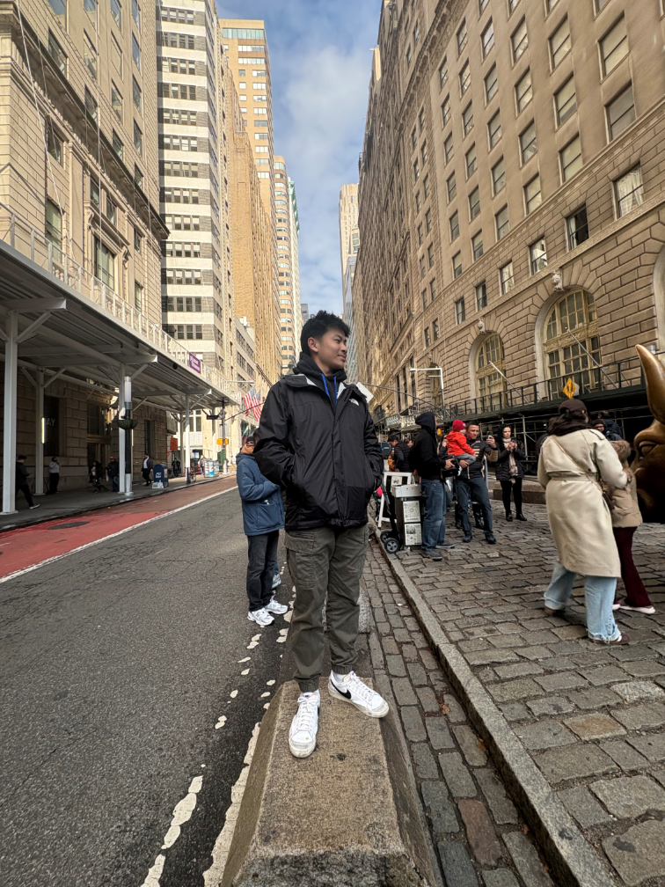

My Background
My name is Petra Sin. I was born in Cambodia and moved to the United States when I was 10 years old.
I am currently a student at the University of Kentucky majoring in ICT.
My Education
I chose ICT because I enjoy learning about technology and communication. I like projects that allow me to build practical skills.
My classes are helping me learn how to create websites that are organized, readable, and useful.
My Interests
In my free time, I enjoy sports like pickleball, skiing, snowboarding, and tennis.
I also like watching movies and relaxing after school work.
My Photo

This photo was taken in New York City. I enjoy visiting new places and exploring different cities.